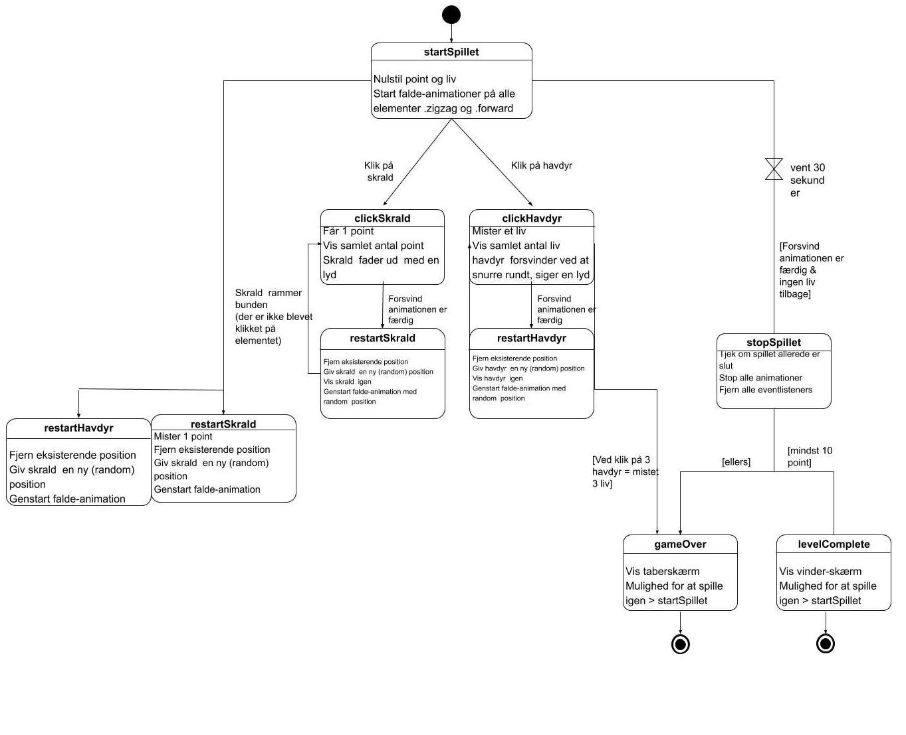
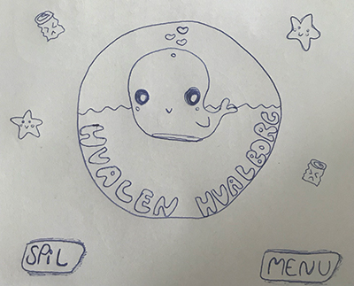
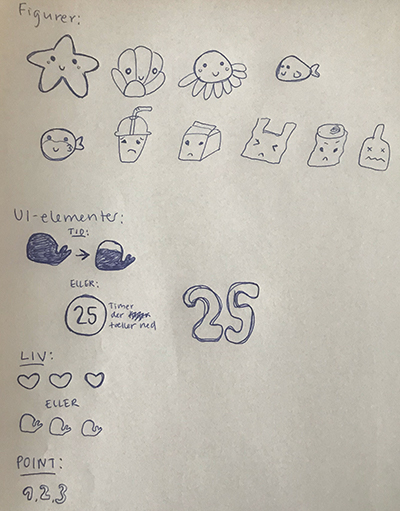
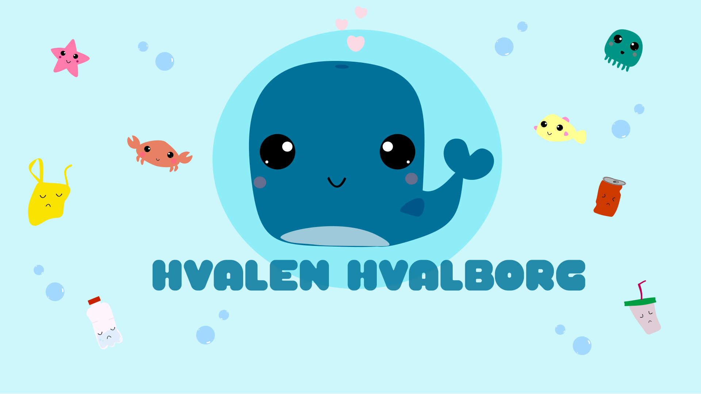
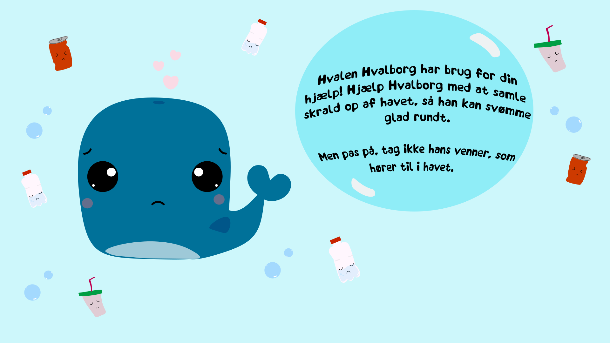
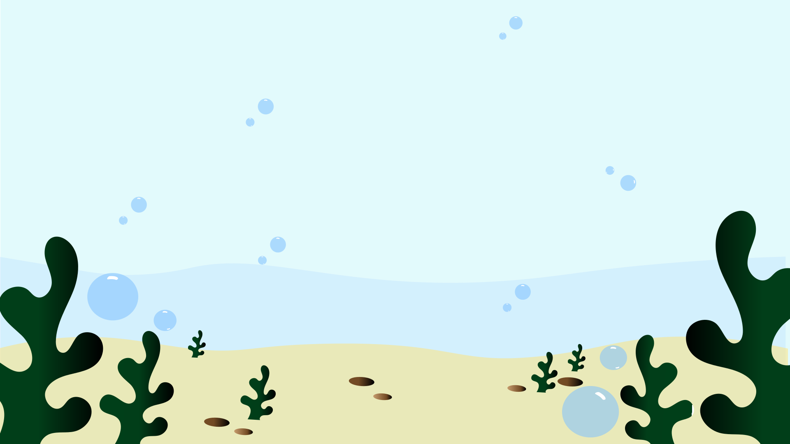
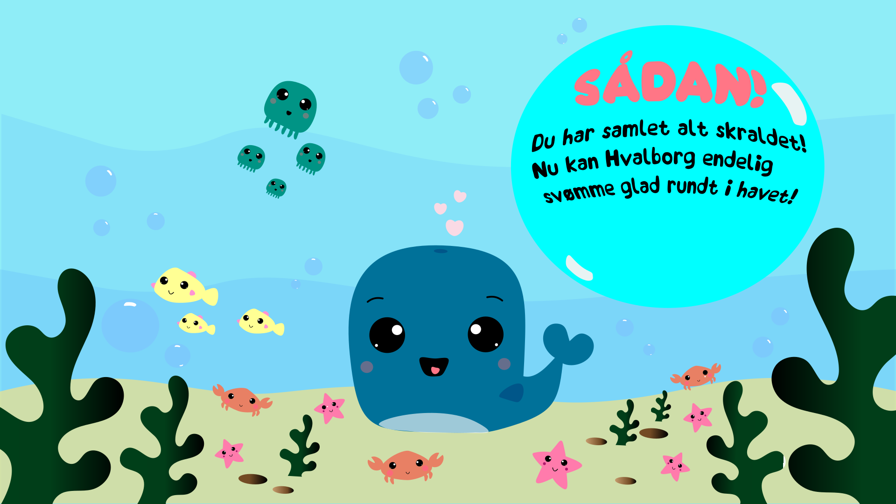
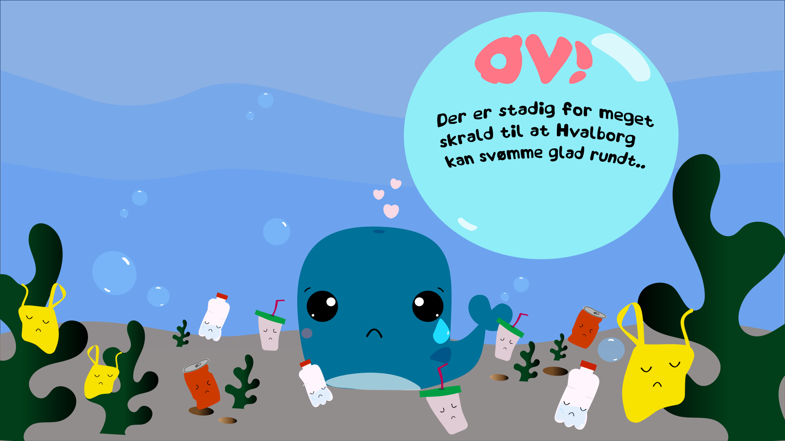
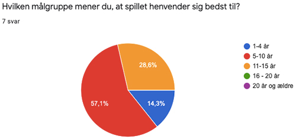

I dette tema blev vi introduceret til javascript, som benyttes, når man ønsker en mere avanceret og dynamisk hjemmeside med interaktive elementer så som burgermenu. Vi lærte også, hvordan man udarbejder et akitvitetsdiagram og state machine diagram. Derudover arbejdede vi også med formgivning og kompositionsprincipper, design af UI og spil-elementer, som skulle følge en bestemt stilart. Lærte vigtigheden af rule of thirds samt formgivnings- og kompositionsprincipper.
Da jeg var kommet frem til spillets handling skulle der laves et aktivitetsdiagram. Aktivitetsdiagram er en simpelt oversigt over, hvad der sker i spillet mellem start og slut. Inden vi skulle gå igang med at kode selve spillet skulle vi lave et State Machine diagram. Dette adskiller sig fra aktivitetsdiagrammet, da dette er mere detaljeret fordi man tilføjer diverse animationer, som skal sættes på spillets forskellige elementer. State Machine diagrammet er derfor vigtigt at have klart inden man begynder at kode. Mit aktivitetsdiagram kan ses her (åben link i ny fane) og mit State Machine Diagram kan ses nedenunder.
Stil-insipationen til mit spil og diverse spil-elemter tager udgangspunkt i Kawaii. Denne stil kommer fra Japan og den kendetegnes ved bløde former, ingen skarpe kanter og har et barnligt udtryk. Min idé til spillet, om at man skal hjælpe Hvalen Hvalborg med at samle skrald op af havet, syntes jeg at det kunne være spændende at lave et spil, hvor børn er målgruppen. Derfor brugte jeg også kawaii-stilen som udgangspunkt til mit design, da den kendetegnes ved bløde former, ingen skarpe kanter og har et barnligt udtryk. Nedenunder ses mine første skitser for Hvalen Hvalborg, og som man kan se, har jeg haft en tydelig vision for, hvordan mit udtryk skulle være og har gennem processen forbedret og udviklet divserse elementer samt designet.
 Stil-insipationen til mit spil og diverse spil-elemter tager som sagt udgangspunkt i Kawaii. Denne stil kommer fra Japan og som tidligere nævnt kendetegnes den ved bløde former, ingen skarpe kanter og har et barnligt udtryk. Da jeg både har 'gode' og 'onde' spil-elemtener, men samtidigt skulle holde mig til kawaii-stilen arbejdede jeg meget med øjnenes udtryk for at gøre forskellen tydligere på de forskellige spil-elementer. Kawaii-grafikken har et meget fladt udtryk og gør ikke brug af mange grafiske effekter. For at tilføje lidt dimensoner valgte jeg derfor at give diverse bobler, som ses på de forskellige spilleskærme, et 3-D look. Dette gør, at det føles en anelse mere levende. Nedenunder ses nogle af mine spil-elemter.
I min assetliste, som kan kan finde her (åben linket i ny fane), kan man se resterende spil-elementer samt UI-elementer. Man kan også se, at mine slut-skærme samt startskærm har ændret udtryk. Jeg ændrede udtrykket på mine slutskærme, da jeg syntes at der manglede en tydelig markør, når man endten havde tabt eller vundet. De endelige Spilleskærme kan ses her nedenunder. Jeg ændrede spilleskærmene
    I slutningen af processen lavede jeg et spørgeskema angående mit spil, som folk svarede på. Her ville jeg gerne få information om, hvordan man opfattede spillet: Om det foregik tydeligt hvad spillet gik ud på, om modtageren opfattede en rød tråd i grafikken igennem hele spillet samt hvilken aldersgruppe modtageren mente, at spillet henvendte sig bedst til.
Hvis jeg skulle tilføje/ændre noget til spillet i dag, med henblik på aldersgruppen 5-10 år, som jeg fik konstateret udfra mit spørgeskema, så ville jeg ændre info-siden. Børn mellem 5-10 år læser ikke og derfor ville det være mere børnevenligt at fjerne teksten, tilføje billeder af hvad man må / ikke må trykke på samt tilføje en audio-fil, hvor reglerne bliver fortalt. På den måde vil børn kunne forstå spillet bedre uden at have en voksen til at læse reglerne højt.
Kodningsprocessen synes jeg adskilte sig fra de resterende projekter, hvor vi har kodet, fordi vi denne gang skulle kode med formålet at lave et interaktiv produkt, nemlig et spil, og i denne forbindelse lærte vi også om Javascript. Trinene i kodningen så således ud: Jeg lavede en div, som jeg kaldte for 'screen' og inde i den lavede jeg en masse forskellige div'er som indeholder alle elementer, som skulle indgå i mit spil og gav alle div'er en ID, så jeg kunne style dem i min CSS skamt 'kalde' på dem i mit JavaScript dokument. Alle mine spil-elementer fik også hver sin container samt sprite. Alle mine spil-elementer er png-filer og disse blev sat ind i mit CSS dokument. I min CSS lavede jeg også alle de animationer, som jeg ønskede skulle indgå i mit spil og dette gjorde jeg ved at tilføje diverse properties så som animation-duration, animation-iteration-count, animation-timing-function etc. samt keyframes til den tilhørende animations-klasse. I mit JavaScript dokument satte jeg mine animations-klasser på de ønskede animationer. F.eks. satte jeg min falling-animation på alle mine elementers containere, så de falder ned / bevæger sig på skærmen. Ved hjælp af AddEventListener i Javascript bliver en ny animation kaldt, f.eks. rotation, når man klikker på elementet. AddEventListerner havde jeg også tilføjet til mine 'spil nu' og 'spil igen' knapper for at gøre det muligt, at komme til en ny side i spillet.